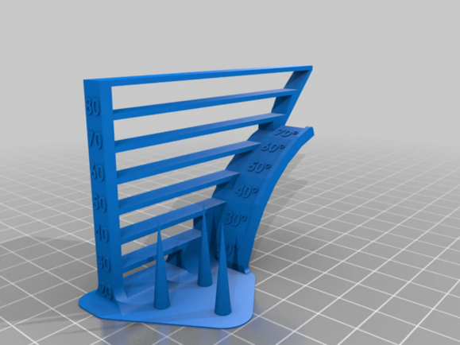
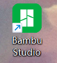
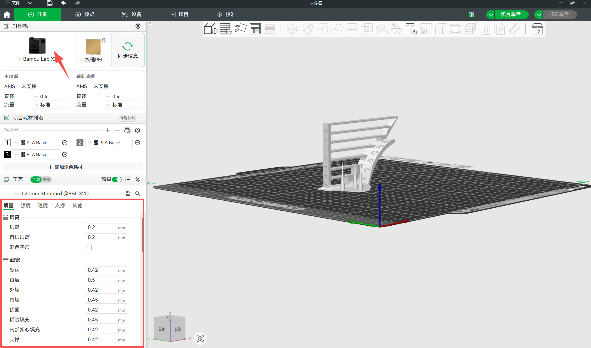
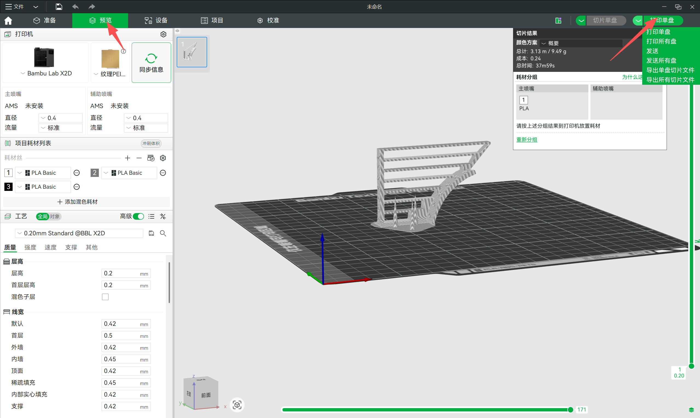

Exercise 5: 3D Printing
View your assignment
Production Process Document of 3D Printing Test Model
1. Test Model
Go to the https://www.thingiverse.com website to download test files.

This product is a multi-functional 3-in-1 3D printing test model, which integrates three core detection functions: bridge forming test, overhang sagging test, and stringing test. It is integrally formed without separate printing of multiple parts. Compared with traditional split 3D printing test models, this model features a streamlined structure and ultra-low material consumption, which effectively saves printing materials and time, and is suitable for parameter debugging of most FDM 3D printers.
Open the software Bambu Studio.

Adjust parameters in the left editing panel to prepare for printing.

After previewing the effect, export the file and upload it to the 3D printer for printing.
